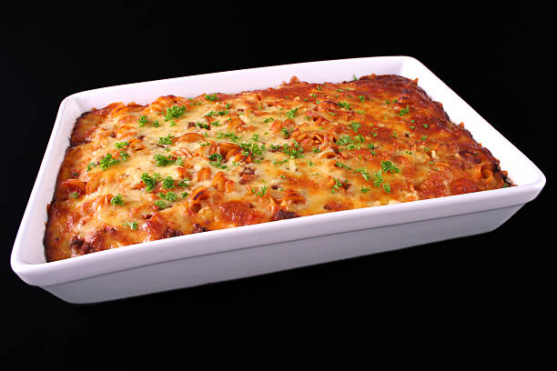

Lasagna

Lasagna
This oven baked pan of cheesy garlicky and italian spiced lasagna
will tempt you to go back for second helpings.
Ingredients
- 1 half pound each hamburger and italian Sausage.
- 4 cloves minced garlic
- 2 tablespoons basil
- 1 tablespoon oregano
- 1 tablespoon italian seasoning
- 1 teaspoon salt
- 1 12 or 15 ounce can tomato puree
- 1 half jar of 32 ounce ragu traditional spaghetti sauce
- 1 15 ounce can of tomato sauce
- 1 box lasagna noodles
- 1 15 ounce ricotta cheese
- 1 cup grated parmesan cheese
- 2 tablespoons parsley
- 1 half teaspoon pepper
- 3 cups grated mozzarella cheese
Steps
- Brown hamburger with sausage.
- Add the next seven ingredients on list.
- Simmer uncovered for 30 minutes.
- Boil and drain the noodles (use a bit of oil so they don't stick together).
- Beat eggs - add remaining ingredients minus the mozzarella cheese mix well.
- Grease large 9 x 13 baking pan.
- Layer noodles, spread ricotta then meat sauce then mozzarella cheese.
- Repeat 2 additional layers then add mozzarella on top of the last layer.
- Preheat oven to 350 degrees.
- Bake for 30 minutes freshly assembled or 45 minutes if the dish was refrigerated.
- Check for doneness: edges around lasagna should be bubbling
- Remove from oven and let stand 10 minutes before serving : very hot.